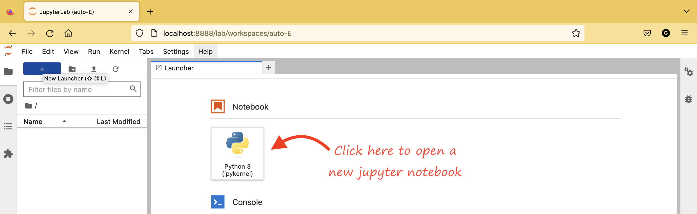

Working with JupyterLab
Contents
1. Working with JupyterLab#
Sections
Miniconda is a free minimal installer for conda. It is a small, bootstrap version of Anaconda that includes only conda, Python, the packages they depend on, and a small number of other useful packages, including pip, zlib and a few others.
1.1. Miniconda and conda environments#
Install Miniconda selecting the right Miniconda installer for your operating system and, then, create a new conda environment running in a terminal
conda create -n seismology ipython
conda activate seismology
conda install -c conda-forge jupyter-book jupyterlab
conda install cartopy obspy geopy
We have just create a conda environment named seismology and installed the packages for
the web-based interactive development environment JupyterLab for notebooks, code, and data.
Then, we have activated the conda environment seislab and installed
ObsPy for processing seismological data. It provides parsers for common file formats, clients to access data centers and seismological signal processing routines which allow the manipulation of seismological time series.
Cartopy for geospatial data processing in order to produce maps and other geospatial data analyses.
GeoPy is a Python client for several popular geocoding web services that we will use just for calculating distance between geographic points.
Tip
If your operating system is Windows, please visit https://docs.conda.io/projects/conda/en/latest/user-guide/install/windows.html for additional information on the installation of Miniconda.
1.2. Our first Jupyter notebook#
Then, we will make a directory where we will save our scripts and data, and lunch the web-based interactive development environment JupyterLab from this directory
mkdir documents/seismology
cd documents/seismology
jupyter lab
The last command jupyter lab opens a new window in your browser from where you can start a new jupyter notebook by a simple click

type your first command in the first cell
print("My first command!")
My first command!
and save the notebook as my_first_notebook.ipynb

Before lunching JupyterLab
Please make sure to navigate to the directory documents/seismology
cd documents/seismology
and activate the conda environment seismology
conda activate seismology
Only then lunch the JupyterLab interface
jupyter lab
1.3. Local libraries#
In order to implement the python commands of this book, the local libraries theory and lab have been developped. These are simple python files theory.py and lab.py that contain some functions that we will often use though this book, especially for plotting our results. We have to download them and save on the directory seismology that we have just created and where we will work.
The content of these python files is also shown in Lecture 13 - Libraries.
1.4. Interactive computing#
Below is an example of a code cell that you can implement in your Jupyter notebook. We will visualize some simple data using two popular packages in Python. We will use NumPy to create some random data, and Matplotlib to visualize it.
from matplotlib import pyplot as plt
import numpy as np
# Generate 100 random data points along 3 dimensions
x, y, scale = np.random.randn(3, 100)
fig, ax = plt.subplots(tight_layout=True)
# Map each onto a scatterplot we'll create with Matplotlib
cmap = ax.scatter(x=x, y=y, c=scale, s=np.abs(scale)*500);
ax.set(title="Some random data, created with JupyterLab!");
fig.colorbar(cmap, ax=ax, label="scale");
You can also allow for interacting figures in order to zoom in and out freely
%matplotlib widget
Try to run again the code cell above to see the change.
Remember also that most of the commands has an help that can be displayed. Here the help for the function np.random.rand that we have just used for generating 100 random data points along 3 dimensions.
help(np.random.rand)
Help on built-in function rand:
rand(...) method of numpy.random.mtrand.RandomState instance
rand(d0, d1, ..., dn)
Random values in a given shape.
.. note::
This is a convenience function for users porting code from Matlab,
and wraps `random_sample`. That function takes a
tuple to specify the size of the output, which is consistent with
other NumPy functions like `numpy.zeros` and `numpy.ones`.
Create an array of the given shape and populate it with
random samples from a uniform distribution
over ``[0, 1)``.
Parameters
----------
d0, d1, ..., dn : int, optional
The dimensions of the returned array, must be non-negative.
If no argument is given a single Python float is returned.
Returns
-------
out : ndarray, shape ``(d0, d1, ..., dn)``
Random values.
See Also
--------
random
Examples
--------
>>> np.random.rand(3,2)
array([[ 0.14022471, 0.96360618], #random
[ 0.37601032, 0.25528411], #random
[ 0.49313049, 0.94909878]]) #random